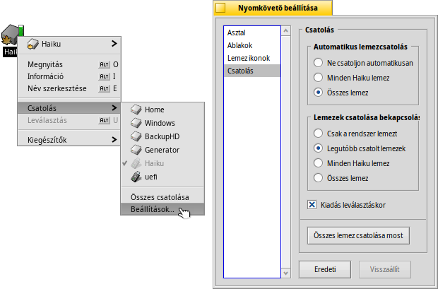
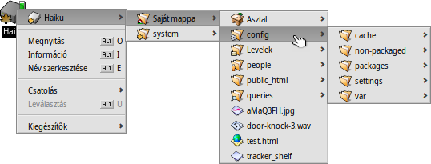
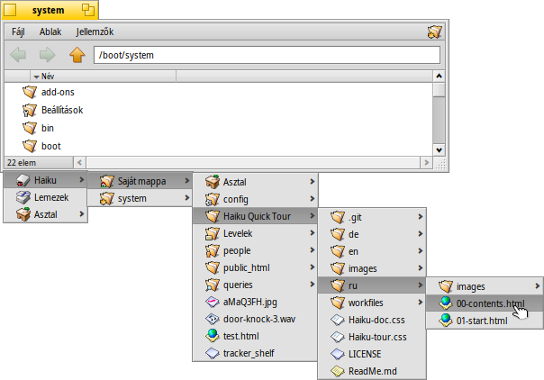
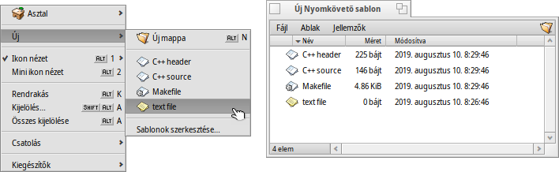
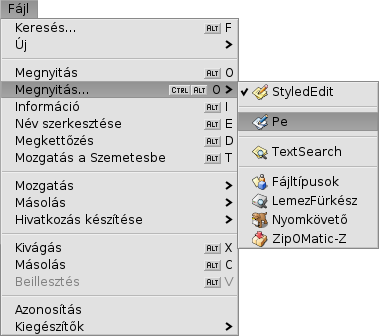
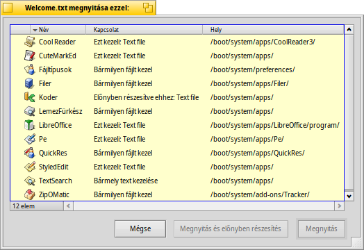
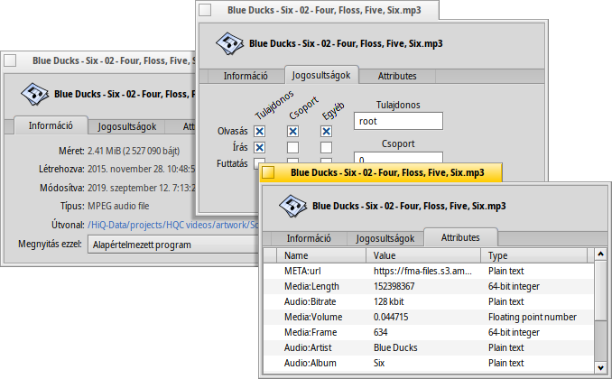
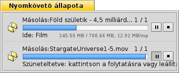

Magyar
Magyar Català
Català Deutsch
Deutsch English
English Español
Español Français
Français Italiano
Italiano Polski
Polski Português
Português Português (Brazil)
Português (Brazil) Română
Română Slovenčina
Slovenčina Suomi
Suomi Svenska
Svenska 中文 ［中文］
中文 ［中文］ Русский
Русский Українська
Українська 日本語
日本語| Index |
|
Lemezek csatolása Navigálás Megjelenés Beállítások Munka a fájlokkal Folyamatjelző |
Nyomkövető (Tracker)
A Nyomkövető egy grafikus felület a fájlokhoz. Használatával új fájlokat és mappákat hozhatunk létre vagy kereshetünk; elindíthatunk, átnevezhetünk, másolhatunk vagy törölhetünk már meglévőket.
Programként (az Asztal mindössze egy teljes képernyős ablak a háttérben), mint az összes többi, a Nyomkövető is megjelenik az Asztalsávon, és ezt is be lehez zárni, illetve újra lehet indítani. A legegyszerűbb módja a meghibásodott Nyomkövető (ugyanakkor az Asztalsáv) újraindításának az, ha a Folyamatfigyelőben tesszük azt meg.
 Lemezek csatolása
Lemezek csatolása
Hogy hozzáférjünk a merevlemezekhez, CD-hez, USB lemezekhez, stb., elsőként csatolni kell, így a rendszer már használni tudja azt. Ezt megtehetjük az Asztalon vagy egy lemezen jobb gombbal kattitnva, majd a menüből a szükségeset kiválasztva. Ugyan ilyen menü található az Asztalsávon is.
Egy menü is a rendelkezésünkre áll, így megadható, hogy ne kelljen minden esetben kézzel csatolni a szükséges lemezeket.
A fenti beállítás alapján a rendszer az összes elérhető BeOS lemezt automatikusan csatolni fogja, ugyanakkor indításkor a legutóbb használt lemezeket is csatolja majd.
Navigálás
Alap esetben ha duplán kattintunk egy mappán, akkor a Nyomkövető megnyit egy új ablakot. Ezzel a megoldással gyorsan túlzsúfolt lehet az Asztalunk.
Ez megelőzhető: tartsuk lenyomva az OPT billentyűt, így a szülő mappa ablaka automatikusan bezárul.
Ez ugyan úgy igaz a billentyűzettel való navigálás esetén is. További információk a Billentyűzet-kombinációk fejezetben.
A mappákkal történő munka a Nyomkövető egyik funkciója, épp úgy, mint a fájlkezelők esetében a többi operációs rendszernél. A Haiku-ban a Nyomkövetőnek van néhány sajátossága, ami növeli a hatékonyságot.
Menü navigáció
Ahelyett, hogy az almappákon végig kattintgatnánk, van erre egy egyszerűbb módszer is:
Egy mappán jobb gombbal kattintva a hagyományos helyi menü tetején találunk egy almenüt, amivel navigálhatunk az adott mappán belül. Csak mennjünk végig az egész hierarchián, amíg meg nem találjuk az adott fájlt vagy mappát, amire szükségünk van. A fenti példában a /boot/apps/BePDF/ mappa tartalmát látjuk.
Ha egy fájlt megfogva hajtjuk ezt végre, akkor az abba a mappába kerül áthelyezésre, amelyikbe dobjuk (amelyiken az egér gombját felengedjük).
Hasonló érhető el minden Nyomkövető ablakból is:
Kattintsunk a bal alsó sarokban található területre, ahol a megjelenített elemek száma látható, és ekkor megjelenik egy almenü, ahol szintről szintre megjelennek a mappák ahol a jelenlegi mappa található. Innen pedig szintén navigálhatunk a megjelenő mappákon belül.
Itt megjegyzendő, hogy az Asztal mindig is a legfelső szintnek fele meg, ahol a lemezek is megjelennek. Tehát, ha egy másik lemezre szeretnénk menni, akkor elsőként a legfelső szintre kell navigálni, vagyis az Asztalra, és onnan már mehetünk a másik lemezre.
Ugyan ez az almenü-navigáció jelenik meg, amikor egy fájlt egy mappa fölé húzunk. Miután rövid ideig felette tartjuk, a menü megjelenik, és így megkereshetjük azt, amelyikre szükségünk van. Ha a jobb egér gombbal indítottuk el a navigációt, akkor választhatunk másolás, mozgatás vagy hivatkozás létrehozása között az egér gombjának felengedése után.
Fájlra ugrás billentyű leütés hatására
Ismerősnek tűnhet ez a funkció a más operációs rendszereken használatos fájlkezelőkből: az első néhány karaktert leütve az első egyező találatra ugrik a fájlálistában. A Haiku egy lépéssel tovább megy. Ha nincs olyan bejegyzés, ami a leütött karakterekkel kezdődik, akkor a bejegyzés nevében keres tovább, így ha a neve tartalmazza a megadott karaktereket, akkor arra a bejegyzésre ugrik amit elsőként így megtalál. Ha így sem talál egyet sem, akkor a jellemzők következnek.

A fenti példában sok olyan fájl van, ami "welcome"-al kezdődik, így ezt begépelve nem jutunk eredményre. Azonban, ha már a "hu" szót írjuk be, akkor már a "welcome_hu.html" nevű fájlra ugrik. A beírt karakterek a bal alsó sarokban jelennek meg, ott ahol normál esetben a bejegyzések száma látható. Egy másodperccel a karakter leütése után az ablak visszavált normál módra, így új keresés indítható.
Gépelés közbeni szűrés
Ahelyett, hogy egy fájlra ugranánk gépelés közben, arra is lehetőségünk van, hogy a keresésnek nem megfelelő találatok ne jelenjenek meg a listában. Ezzel a megoldással könnyedén lehet szűrni azokat a mappákat is, amelyek sok bejegyzést tartalmaznak. A SHIFT SPACE, mint elválasztó használatával több szóra is szűrhetünk egyszerre.
Ellentétben a billentyű leütésekor a fájlra ugró megoldással, itt a szűrés befejezéséhez vagy az ESC-et kell leütni, vagy pedig az ablakot be kell zárni (illetve, ha egy ablakos böngészést használunk, akkor lépjünk egy szinttel fejjebb).
Ez a típusú szűrés beállítható a Nyomkövető beállításoknál.
Megjelenés

A Nyomkövető ablakok három különféle megjelenítést tesznek lehetővé, melyeket az menüben érünk el:
(ALT 1) - Nagy ikonok, melynek a mérete módosítható az almenüből, illetve az ALT +/- kombinációval.
(ALT 2) - Kicsi ikonok.
(ALT 3) - A detailed list of your files enabling you to show/hide file attributes. (See topic Attributes.) From the submenu you can choose to use either mini or large icons.
Az menü több más funkciót is tartalmaz:
(ALT Y) - Az ablakot az ideális méretűre méretezi.
- Csak ikon és mini ikon nézetben érhető el, mikoris az alábbi lehetőségek közül választhatunk:
, , , , , , ,
- A rendezés irányának megváltoztatása.
(ALT K) - Az összes ikon egy képzeletbeli rácshoz való illesztése. A SHIFT-et lenyomva tartva a menü átvált az re, ami ezen kívül még a megadott feltétel szerint sorba is rendezi azt.
(SHIFT ALT A) - A fájlok kijelölése általános kifejezés alapján.
(ALT W) - Az ablak bezárása. Tartsuk lenyomva a SHIFT billentyűt és a menüben az jelenik meg, ami az összes Nyomkövető ablakot bezárja.
(ALT Q) - Az összes Nyomkövető ablakot bezárja a jelenlegi munkaasztalon. Ez hasznos lehet, ha elfelejtjük az OPT billentyűt lenyomva tartani miközben megnyitjuk az újabb mappákat amivel "rendetlenséget" hagyunk magunk után.
Néha csak néhány ikont szeretnénk rendezni anélkül, hogy a teljes t (ALT K) elvégeznénk. Ebben az esetben válasszuk ki a rendezni kívánt ikonokat, és mozgassuk azokat az új helyükre. Mielőtt oda húznánk az ikonokat, tartsuk lenyomva az ALT billentyűt. Így az ikonok a rácshoz lesznek igazítva.
A funkciók többsége magától értetődő.
Beállítások
Az menü megnyit egy panelt, ahol több beállítás is található amik talán nem egészen egyértelműek. Mivel az összes beállítás módosítása élő, így azonnali eredménnyel jár.
Az alábbi beállítások érhetőek el:
- Eldönthetjük, hogy az összes csatolt lemez közvetlenül az Asztalon jelenjen meg, vagy egy külön ablakban, mely a Lemezek ikonnal nyithat meg.
- Itt állítható be az , aminek hatására egy mappa megnyitásakor annak tartalma ugyanazon ablakban jelenik meg. Ez nem ugyan az, mint amikor kattintás közben lenyomva tartjuk az OPT billentyűt, mint már említettük, ugyanis most elveszítjük az ablak méretét és pozícióját is.

Mielőtt egy ablakos módba váltunk, ha az kézenfekvőbb, akkor azt ajánljuk, hogy előtte ki kell próbálni azt, ugyanis nem biztos, hogy sokkal gyorsabb lesz, mint az alap beállítás. Másrészről az egy ablakos böngészés egy Navigátor használatát is lehetővé teszi, ahová beírhatunk, másolhatunk vagy beilleszthetünk útvonal címet, továbbá tartalmaz egy vissza, előre és egy szinttel fejjebb gombot is.
A funkció aktiválásával az ablak tartalmának szűrésekor az a bejegyzés (fájlnév vagy jellemző) jelenik majd meg, ami megfelel a szűrés feltételeinek. További részletek feljebb.
- A lemezek ikonja mellett a lemez kihasználtságát jelző sáv bekapcsolása és színének beállítása.
- Megadható, hogy mely lemezeket és mikor csatolja automatikusan a rendszer. Részletesebben a "Lemezek csatolás" fejezetben.
Ez a panel szintén elérhető Nyomkövető néven az Asztalsáv menüjében.
Munka a fájlokkal
Ha aktiválunk egy fájlt, akkor a menüben lévő parancsok nagyrésze a helyi menüben is megtalálható.
Mint mindig, a parancsok itt is egyértelműek.
- Egy fájl vagy mappa megkeresése. További információk a Lekérdezések fejezetben.
- Új fájlt vagy mappát készíthetünk sablon alapján.
A megnyitja a /boot/home/config/settings/Tracker/Tracker New Templates mappát. Az ebben a mappában létrehozott fájlok fognak megjelenni sablonként az menüben A sablon alapján kap a fájl egy nevet, illetve a jellemzői is megegyeznek a sablonéval. Jelen példában van egy "Text" fájlunk, aminek a típusa text/plain. További információk a Fájltípusok fejezetben.
- Ez a menü tartalmazza az összes programot, ami kezelni tudja az adott fájlt.
A listában az alapértelmezett program be van jelölve (az, ami dupla kattintással a fájlon megnyitja azt). A listában elsőként azok a programok jelennek meg, amik pontosan az adott típusú fájlok kezelésére szolgálnak, esetünkben: text/plain. Sorban ezek után jönnek azok a programok, melyek a fájl fő típusát kezelik (esetünkben: text/*). Végül pedig a listában azok jelennek meg, melyek bármit is tudnak kezdeni a fájllal. Ha nem egy programon kattintunk a menüben, hanem magán a menün, akkor egy új panel nyílik meg:
Itt megintcsak megtaláljuk azokat a programokat, melyek a menüben is megjelentek. Egyet kiválasztva, majd a gombra nyomva megadható, hogy az összes ugyan ilyen típusú fájlt (esetünkben a text/plain típus) az adott programmal nyíssuk meg a későbbiekben.
-
Ez a panel információkat szolgáltat a kijelölt fájlról, lehetőséget nyújt az előnyben részesített program módosítására, és a panel alsó részének kinyitásakor a fájl engedélyei és tulajdonosa is változtatható. Az útvonalon kattitnva pedig megnyílik az a Nyomkövetőben.
, és - Egy fájl átnevezése, megduplázása vagy a Szemetesbe helyezése.
, és - Az almenün keresztül navigálva eljutunk abba a mappába, ahová a fájlt át szeretnénk másolni, mozgatni, vagy ahová hivatkozást szeretnénk létrehozni hozzá. A SHIFT-et lenyomva tartva relatív hivatkozás létrehozására lesz lehetőségünk.
, és - A vágólap használatával kivághatunk, másolhatunk egy bejegyzést a mappából vagy beilleszthetünk egy bejegyzést a jelenlegi mappába. A SHIFT-et lenyomva tartva pedig megjelenik a menü, ami több fájlon engedi elvégezni ezeket a műveleteket, amiket majd később beszúrhatunk egy másik mappába. Szintén a SHIFT-et lenyomva tartva a kimásolt fájloknak a hivatkozását a vágólapra másolhatjuk.
- Meghatározza a fájlok típusát, ha jelenleg még nem azonosítottak, például ha az internetről töltöttük le azt wget használatával, ami nem állítja be letöltés után a fájl típusát. A menü megnyitásakor a SHIFT-et lenyomva ez megváltozik ra, ami megállapítja a fájl típusát, és kijavítja azt hibás típus esetén.
- Az összes alap Nyomkövető kiegészítő és azok, melyek az adott fájlt képesek kezelni. További információk a Nyomkövető kiegészítők fejezetben.
Folyamatjelző
Amikor fájlt másolsz, mozgatsz, vagy törölsz, akkor a Nyomkövető egy folyamatjelzőt jelenít meg. Ha egyszerre több művelet is folyamatban van, akkor minden művelet egy külön folyamatjelzőt kap.
A jobb oldalon két gomb is található, melyekkel szüneteltethető vagy leállítható az adtt művelet. Néha szükség lehet hosszabb folyamatok megállítására. Például ha gyorsan el kell indítanunk egy nagy programot. Nagy mennyiségű adat másolásakor a lemez sok írást/olvasást végez, így lelassítja a munkát.